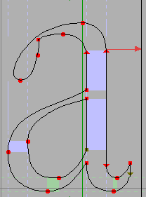
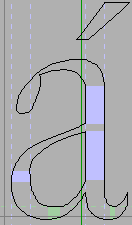

アクセントつき文字およびその他の複合文字を構築する方法
エレメント(L)→組み立て(U)→アクセントつきグリフを構築(B) コマンドを使って、アクセントつきグリフを組み立てることができます。または、エレメント(L)→組み立て(U)→複合グリフを構築(C) を使えば、わずかに一般的な (外字などを含む) 複合グリフの組み立てが行えます。「アクセントつき」の方は、合字の作成やアルファを A で代用するようなことは行えません。「複合グリフ」のほうは、そのどちらも行えます。私の見積もりでは、美しく見える合字 (“fi”合字のような) を作るためには一般的にユーザ側で行う必要のある作業がそれよりも少し多くなります。“fi”の場合、“i”のドットは“f”の先端と融合させる必要があり、このコマンドの使用時にうっかりしていると、すべての作業を不注意で壊してしまう可能性があります。
どのような物を組み立てられるか?
-
Unicode では、多数の正規グリフ分解を仕様で定めています。例えば“Aacute”は“A”の上に“acute”アクセントを中央揃えで置いたものと定義されています。その種の文字はすべて組み立てることができます (ただし、グリフにアクセントが含まれていないときには
複合グリフを構築(C)コマンドで組み立てる必要があります)。
Unicode の正規分解の定義は、期待されるほど情報として役立たない場合があります (ギリシャ文字のアクセントの多くは形が全然違うラテン文字のアクセントと「統合」されているので、考えなしに Unicode に従うと間違ったグリフが出来上がります)。そのような場合は、FontForge は正規分解と少し異なるグリフの組合せを使用します。
以下のような物が含まれています:- アクセントつきラテン文字
- ラテン文字の合字 (ae, oe, fi, fl など)
- アクセントつきギリシャ文字
- アクセントつきキリル文字
- ヘブライ文字の合字
- アラビア文字の合字
- 分数、括弧つき数字、ローマ数字など
- 完成型ハングル文字 (0xac00-0xdfaf)
- ハングル字母(Jamo)の多くは実際には他の字母の合字です (ssangkiyeok (0x1101) は、2 個の kiyoeok (0x1100) の組合せからなります。いくつかの理由によりこの情報は Unicode の正規分解に含まれていませんが、FotnForge はこの事実を知っているので、適切な指示により、そのグリフを組み立てることができます。
- グリフ“i”と“j”は、dotlessi と dotlessj のグリフにドットアクセントを追加することによって組み立てることができます。
- dotlessi と dotlessj のグリフは、“i”と“j”のグリフからドットを取り除くことによって組み立てることができます。
- FontForge はそれ以外にもいくばくかの事柄を知っています。ギリシャ文字の“アルファ”とキリル文字のАはどちらもラテン文字の“A”と同じ形をしていることを知っているので、指定すればどれか 1 つで他を置き換えることができます (ラテン、ギリシャ、キリル、チェロキーなどの用字系に含まれるその他の同形のグリフも同様です)。
- いくつかのグリフは非常に簡単に組み立てることができます。幅ゼロのスペースに対応する文字がたくさんあります。FontForge はそのどれでも組み立てることができます。もっと役に立つ例としては、0x2000〜0x200f の固定幅のスペース と、0x2010〜0x2015 にある固定幅の罫線です。
-
エレメント(L)→グリフ情報(I)...を使って、自分で合字を定義すれば、FontForge はそれを組み立ててくれます。 -
Adobe の CID グリフ集合の中には、あらかじめ回転済みの版のラテン文字がいくつか含まれています。CJK のテキストを縦書きするときには、西洋のアルファベットで書かれたすべてのテキストは時計回りに 90°回転する必要があります。これらのグリフ位置で
アクセントつきグリフを構築(B)を適用すると、適当なラテン文字を見つけて、それを適切に回転します。
グリフ名が“vertcid_<cid;>”(ここで <cid;> は 10 進数) という形式のときは、そのグリフは <cid;> のグリフを縦書き用に回転した物であると見なされます。非 CID フォントでは、グリフ名が“vertuni<uni;>”(ここで <uni;> は 4 桁の 16 進数) の場合は、その Unicode グリフを縦書き用に回転した物であると見なされます。
それにより、フォントビュー上で選択した各グリフ (または、アウトラインビューの場合は現在のグリフ) に対して、そのグリフが必要とするすべての基底グリフとアクセントが既に作成されている場合に限り、このコマンドは前面に含まれる物をすべて削除し、その代わりに、基底グリフへの参照とアクセントつきグリフへの別の参照を前面に配置します。例えば現在のグリフが“À”である場合、“A”への参照がそのグリフに追加され、“`”への参照が“A”の上に中央揃えで配置されます。
もし コピー元の指定(F) が すべてのフォント(A) に設定されている場合、各ビットマップにも同様の処理が施されます (アウトライングリフビューで実行した場合でもこれは同じです)。
アクセントの選択では、わずかに込み入った処理が行われることがあります。Unicode は、アクセントつき文字は 0x300〜0x340 の範囲に含まれるアクセントから組み立てなければならないと定義していますが、PostScript ではこれはあまりうまく動作しません。Type1 フォントは、アクセントつきグリフが Adobe Standard Encoding に従って配置されているとき (つまり、0x2d0 付近のアクセントまたは ASCII のグリフを使用しているとき) のほうがうまく動作します。FontForge はまず 0x2d0 近くのアクセントを探そうとし、次に ASCII の中を探し、最後に 0x300〜0x340 の範囲を探します。更に悪いことに、Unicode はギリシャ文字とラテン文字のアクセントを統合しているので、ギリシャ文字に対しては FontForge は 0x1fbd 付近のアクセントを探します (FontForge は、その他にも 0x1fdd のような二重アクセントの存在を要求することがあります)。
Adobe のフォントのいくつかは大文字用にデザインされたアクセント (通常のアクセントは小文字用にデザインされています) および、キリル文字用のアクセントを含んでいます。そのようなフォントにおいては、“Agrave”を組み立てようとした時、FontForge は“A”と (標準の“grave”ではなく)“Grave”(または“grave.cap”) からそれを組み立てます。
すべてのアクセントが基底文字と中央揃えで配置されるわけではありません。セディラは (通常) 基底文字の下に中央揃えで置かれますが、他のアクセントは右か左に置く必要があったり、重ねて印字する場合すらあります。FontForge はほとんどのアクセントの正しい配置 (または、少なくともその粗い近似) を知っているはずです。
Unicode のグリフのいくつかは 2 つ以上のアクセントを含んでいます。追加のアクセントも同様に扱われるでしょう。このコマンドは、より一般的な複合グリフを生成するのに使うこともできます。
ある種のアクセント (例えばセディラのような) は、いくつかの文字においては (言語によって扱いが異なった) 思いがけない扱いを受けますので、セディラつき g にはご注意ください。Å も、A の最上部とリングが融合するデザインはよく見られますが、ここでは上部に浮かんだ形となります。ご注意ください。
アクセントをグリフの上部に配置する処理は驚くほど込み入っています。中央揃えのアクセント (グレーブアクセント、アキュートアクセントなど) はグリフのちょうど真中に配置してはならないからです。例えば、アキュートアクセントを“a”の上に置く時には、実際のアクセントの位置は“a”の最も高い部分 (グリフのほぼ中央ですが、正確な中心ではありません) の上に配置しなければなりません。また、“k”の上にアキュートアクセントを配置する場合 (めったに見ない組合せですが、実在します) 、アクセントは“k”のステムに中央揃えで配置されます。ギリシャ語のアクセントはそれよりはるかに複雑怪奇です。FontForge は特異なアクセント配置をたくさん知っていますが、すべてを知ることは永久に無いでしょう (複数の形が存在する文字がいくつかあり、それはフォントにより、またはおそらく湿度や月相により異なります)。
|
 |

さらに、アクセントの中央揃えの方法はアクセントそのものに依存します。FontForge は通常、アクセントの中央をグリフの「中央」に揃えようとしますが、これは常にうまく動くわけではありません。グレーブアクセントおよびアキュートアクセントは通常 (常にではありませんが) そのグリフの最下部のみが中央揃えの対象となります。
|
 |

FontForge は、アクセントをどこに置くかごくわずかな調整手段を与えています。(ファイル(F)→環境設定(E) で) 設定可能な環境設定項目が 2 つ存在します。
- AccentOffsetPercent — この項目で、文字の最上部とアクセントの最下部 (または、文字の下につくアクセントにおいては、文字の最下部とアクセントの最上部) の間に置く空きの量を調節することができます。これは em サイズに対する百分率で表され、デフォルトは 6% です。(いくつかの場合では、それよりもわずかに多い空きが置かれる場合があります。小文字の上につくアクセントはすべて同じ高さにある必要がありますが、文字“o”は文字“u”よりもわずかに高い位置に置かれるのが普通です。そういうわけで、小文字のアクセントはすべて“o”に合わせた高さに配置され、“u”につくアクセントでもその高さは変わりません。大文字の文字に対しても、同様のトリックが施されます。
- この項目は、アキュートアクセントおよびグレーブアクセント (また、ダブルアキュートとダブルグレーブも) がグリフ全体を基準として中央揃えするか、単に下端を中央とするかを制御します。
注意: ここで FontForge は何か間違いを犯すに違いありません。私が知らない領域はあまりにたくさんありますし、私の趣味があなたのお気に召さない場合もありますし、プログラムにバグがある可能性もあります。アクセントつきの文字を作成したらそれらをすべて確かめ、まずい点があったら修正する心構えでいるように強く推奨します。
アルゴリズムは italicangle の値にある程度影響を受けますが、イタリック (またはオブリーク) のフォントで作業をしている時は、FontForge はあなたの望むとおりに動作しない可能性がはるかに高くなります。
その他、何かうまくいかない点がある場合、自分で 編集(E)→参照をコピー(O) と 編集(E)→貼り付け(P) を使ってアクセントつきグリフを組み立てることができます。
— エレメント(L) メニュー —
目次 — チュートリアル
—